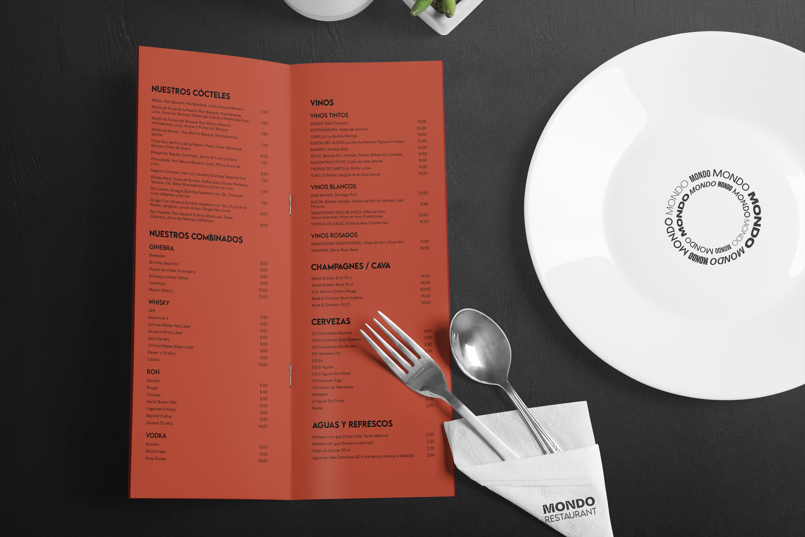

Mondo — Restaurant
.jpg)
Role
Visual identity, Menu design, Typography
Type
University project · Fictional brand
Year
2022
Tools
Illustrator, InDesign, Photoshop
Mondo is a fictional restaurant, and this project builds its visual identity around one central piece: the menu. The work focused on typography and colour, so that the menu itself carries the character of the restaurant.
A two-colour system. The palette was chosen for its contrast and for what each colour means. Green stands for freshness and vegetables; orange for fruit and the warm tones of Spanish cuisine.
A menu in two diptychs. The menu is split into two diptychs that follow the same logic. The green one holds the dishes, built on fresh, natural ingredients. The orange one holds the drinks, with a livelier, more dynamic character.

Layout and type. A balanced layout and a sans-serif typeface give the menu the modern tone of the restaurant.
Beyond the menu. The identity was extended to a business card, keeping the same colours and typography so both pieces read as one system.

The project brought together identity and editorial design in a small, coherent system, where palette, typography and layout work the same way across the menu and the card.